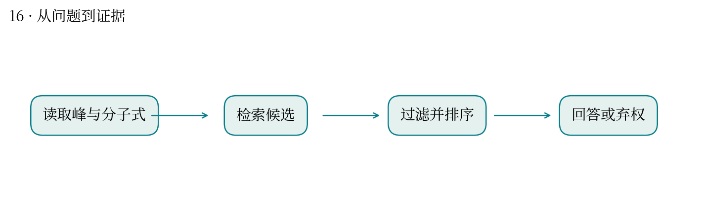
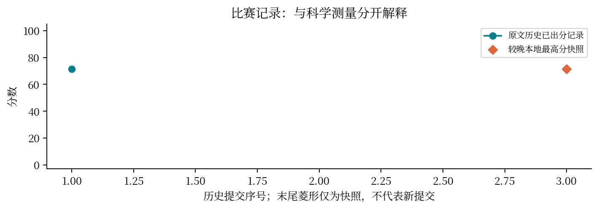

现实中想解决什么：样品出现一张 EI 质谱，怎样缩小未知化合物的身份范围？
从计算到应用：碎片谱与分子式 → 候选结构排序 → 帮助分析人员优先验证。
这次实际做到哪一步：本题检索、分子式过滤并保留弃权，输出的是待确认的候选。
还缺什么：不能把第一名当成已鉴定结构。需标准品、保留信息及其他独立证据确认。
分子碎裂后留下的峰，能否拼回原来的结构？
最高分快照：71.5 · 2026-10-12T01:11:24+08:00
EI 质谱把碎片强度按质荷比分布记录下来；已知分子式缩小候选范围，但同分异构体仍可能相似。
对 200 个样例检索 Top-50，再按分子式过滤，选择首个相容候选；保留弃权和文件契约检查。
历史记录为 197 作答、3 弃权，得分 71.5。当前材料不足以将每个失败归为检索遗漏还是排序错误。
候选列表包含真结构与最终把真结构排第一是不同能力；不能用分子式相同证明结构相同。
很像 BLAST 检索后做物种鉴定：检索相似候选只是起点，还要区分近缘或同源混淆。这里的谱相似性并不等于序列同源。
需要逐样本真值和候选排序才能画分组准确率；报告不会用总分反推出未经证实的错误样本。


| attempt | 提交时间 | 分数 | 状态 |
|---|---|---|---|
| 53460 | 10-11 09:48:33 | 71.5 | 已出分 |
| 54455 | 10-11 15:20:31 | — | 失败 |
源文件 SHA256 见 证据清单；用 scripts/build.py 重建图表。